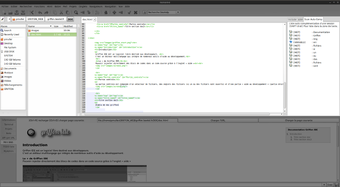
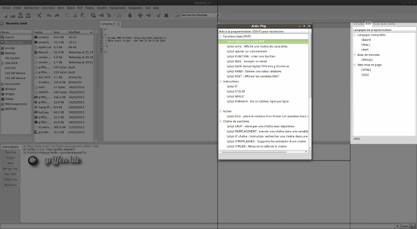
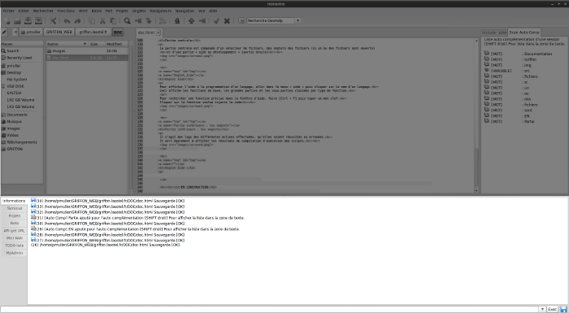
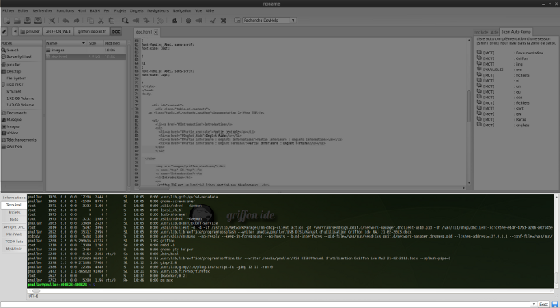
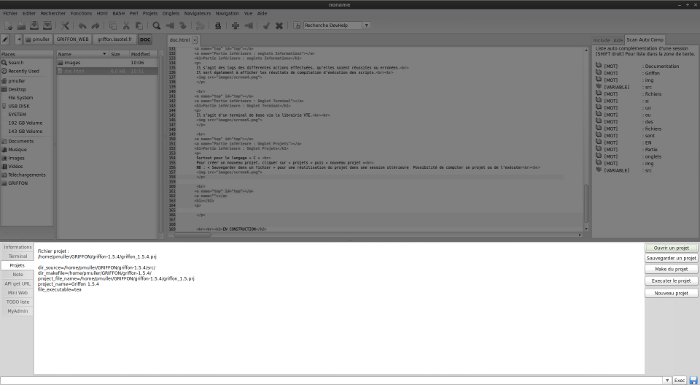
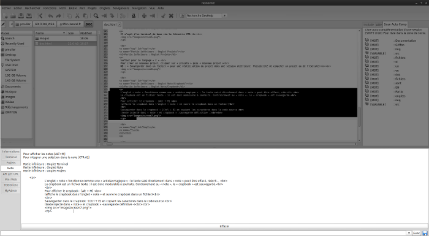
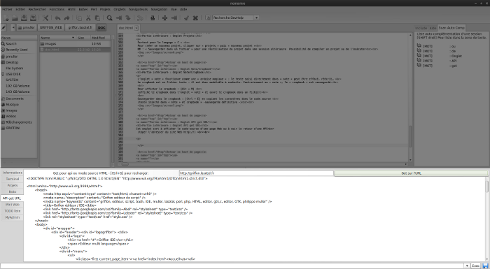
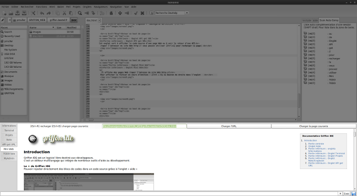
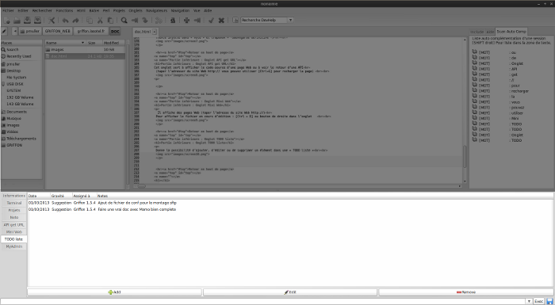
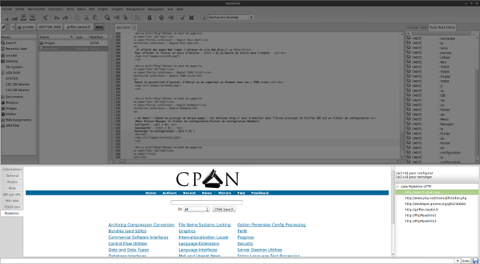

Documentation Griffon IDE
- Introduction
- Partie centrale
- Onglet Aide
- Partie inférieure : onglets Informations
- Partie inférieure : Onglet Terminal
- Partie inférieure : Onglet Projets
- Partie inférieure : Onglet Note/Crapbook
- Partie inférieure : Onglet API get URL
- Partie inférieure : Onglet Mini Web
- Partie inférieure : Onglet TODO liste
- Partie inférieure : Onglet MyAdmin
Introduction
Griffon IDE est un logiciel libre destiné aux développeurs.
C’est un éditeur multilangage qui intègre de nombreux outils d’aide au développement.
Le + de Griffon IDE
Pouvoir injecter directement des blocs de codes dans un code-source grâce à l’onglet « aide »
Retour en haut de page
Partie centrale
La partie centrale est composée d’un sélecteur de fichiers, des onglets des fichiers (si un ou des fichiers sont ouverts)
et d’une partie « aide au développement » (partie droite)

Retour en haut de page
Onglet Aide
Pour afficher l’aide à la programmation d’un langage, aller dans le menu « aide » puis cliquer sur le nom d’un langage.
Ceci affiche les fonctions de base, les grandes parties et les sous-parties classées par type de fonction.
Pour rechercher une fonction précise dans la fenêtre d’aide, faire [Ctrl + F] puis taper un mot-clef.
Cliquer sur la fonction voulue injecte le code

Retour en haut de page
Partie inférieure : onglets Informations
Il s’agit des logs des différentes actions effectuées, qu’elles soient réussites ou erronées.
Il sert également à afficher les résultats de compilation de projets ou d’exécution des scripts.

Retour en haut de page
Partie inférieure : Onglet Terminal
Il s’agit d’un terminal de base via la librairie VTE.

Retour en haut de page
Partie inférieure : Onglet Projets
Surtout pour le langage « C »
Pour créer un nouveau projet, cliquer sur « projets » puis « nouveau projet »
NB : « Sauvegarder dans un fichier » pour une réutilisation du projet dans une session ultérieure Possibilité de compiler un projet ou de l’exécuter

Retour en haut de page
Partie inférieure : Onglet Note/Crapbook
L’onglet « note » fonctionne comme une « ardoise magique » : le texte saisi directement dans « note » peut être effacé, réécrit…
Le crapbook est un fichier texte : il est donc modulable à souhaits. Contrairement au « note », le « crapbook » est sauvegardé.
Pour afficher le crapbook : [Alt + M]
(affiche le crapbook dans l’onglet « note » et ouvre le crapbook dans un fichier)
Sauvegarder dans le crapbook : [Ctrl + E] en copiant les caractères dans le code-source
(texte injecté dans « note » et crapbook » -sauvegarde définitive -)

Retour en haut de page
Partie inférieure : Onglet API get URL
Cet onglet sert à afficher le code-source d’une page Web ou à voir le retour d’une API(taper l’adresser du site Web http:// vous pouvez utiliser [Ctrl+G] pour recharger la page)

Retour en haut de page
Partie inférieure : Onglet Mini Web
Il affiche des pages Web (taper l’adresse du site Web http:// ou file://)
Pour afficher le fichier en cours d’édition : [Ctrl + D] ou bouton de droite dans l’onglet

Retour en haut de page
Partie inférieure : Onglet TODO liste
Donne la possibilité d’ajouter, d’éditer ou de supprimer un élément dans une « TODO liste »

Retour en haut de page
Partie inférieure : Onglet MyAdmin
« my Admin » répond au principe de marque-pages : les adresses http:// sont à modifier dans l’écran principal de Griffon IDE via un fichier de configuration.
(Menu Fichier-Manager le fichier de configuration-Fichier de configuration MyAdmin)
Configurer : [Alt + N];
Sauvegarder : [Ctrl + S] ;
Recharger la configuration : [Alt + H] ;

Retour en haut de page